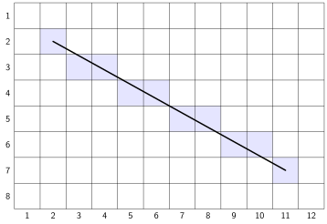
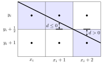
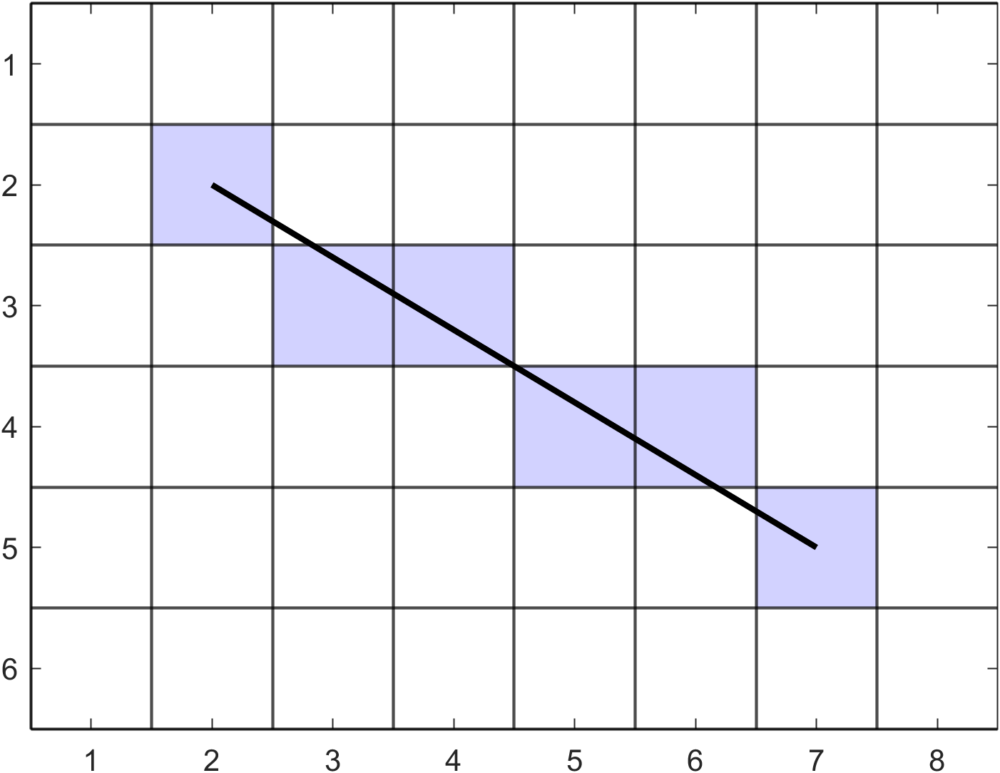
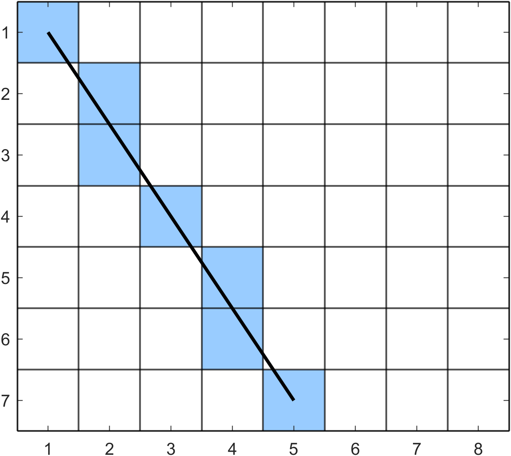
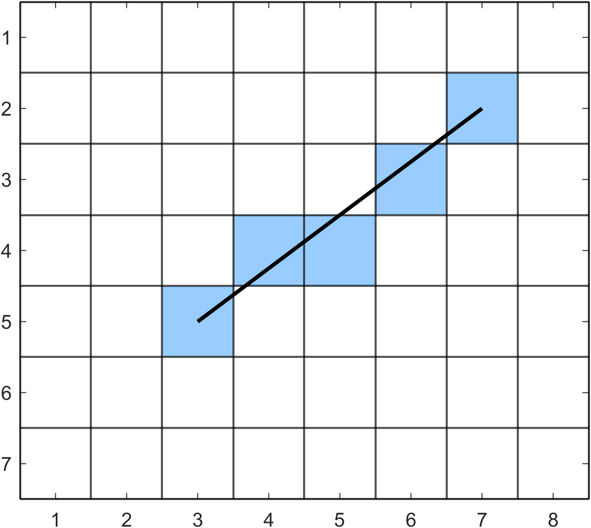

Drawing lines
Contents
Drawing lines#
One of the fundamental tasks in computer graphics is the rendering of a straight line on a display. Consider the diagram in Fig. 96 showing the rasterisation of the straight line joining the two points with pixel co-ordinates \((2, 2)\) and \((11,7)\). The pixels that are closest to the line are shaded to create a rasterised approximation of the idealised image. This is a simple task for a human since we are able to view the idealised image and determine which pixels need to be shaded. Algorithms are required to determine which pixels to illuminate in order to rasterise straight lines
{kind=link}

Fig. 96 Rasterising a straight line#
Bresenham’s algorithm#

Fig. 97 Jack Elton Bresenham#
Bresenham’s algorithm developed by American computer scientist Jack Bresenham [1965] is a line drawing algorithm that uses integer only arithmetic and offers a vast improvement over other methods in terms of computational efficiency. Consider the Cartesian equation of a straight line joining two points with co-ordinates \((x_0, y_0)\) and \((x_1, y_1)\)
where \((x,y)\) are the co-ordinates of a point on the line and \(c\) is the point of interception between the line and the \(y\)-axis. Let \(\Delta y = y_1 - y_0\) and \(\Delta x = x_1 - x_0\) into equation (34) and rearranging gives
Let \(f(x,y) = x \Delta y - y \Delta x + c \Delta x\) then the sign of \(f(x,y)\) tells us whether the pixel at \((x,y)\) is above or below the line such that
To simplify the derivation we are going to assume that the two end points of the line at \((x_0,y_0)\) and \((x_1,y_1)\) are such that \(x_0 < x_1\) and \(y_0 < y_1\) so the line is drawn from left-to-right and top-to-bottom (remember that the \(y\)-axis increases as we move down the raster). If the pixel at \((x_i,y_i)\) has been plotted we move one pixel to the right and we a choice between two candidate pixels at \((x_i+1,y_i)\) and \((x_i+1,y_i+1)\). To decide between these two we calculate the value of \(f(x,y)\) at the midpoint between these two pixels and use its sign. Let \(d = f(x_i+1,y_i+\frac{1}{2})\) be a decision variable then
{kind=link}

Fig. 98 The sign of the decision variable \(d\) determines which pixel is closest to the line.#
So the sign of \(d\) will tell use which of the candidate nodes to choose (Fig. 98). When \(d \leq 0\) the pixel at \((x_i+1,y_i)\) is closer to the line and if \(d > 0\) the pixel at \((x_i+1,y_i+1)\) is closest. The value of \(d\) will change as we proceed along the line, let \(\Delta d = d_{i+1} - d_i\) be the change in \(d\) from one pixel to the next then we can calculate \(d = d + \Delta d\) using
The value of \(\Delta d\) depends on which of the candidate nodes we have chosen. If \(d \leq 0\) the midpoint is beneath the line and we choose the upper pixel \((x_i+1,y_i)\) so \(y_{i+1} = y_i\) and
Otherwise if \(d > 0\) the midpoint is above the line and we choose the lower pixel \((x_i+1,y_i+1)\) so \(y_{i+1} = y_i + 1\) and
So we have way of choosing between the two candidate pixels. All we now need to do is determine the initial value of \(d\). The first endpoint \((x_0,y_0)\) is plotted so the two candidate pixels at \((x_0+1,y_0)\) and \((x_0+1,y_0+1)\) so we calculate the initial value of \(d\) using
The expression for calculating includes a floating point number \(1/2\). Floating point numbers have a much larger computational cost than integer numbers so it would be beneficial if we can only use integer numbers. Since we are only concerned with the sign of \(d\) and not its value we can multiply the expressions for calculating the initial value of \(d\) and \(\Delta d\) by 2 to give
The basic Bresenham’s algorithm is written using pseudocode in Algorithm 7.
Algorithm 7 (Bresenham’s algorithm)
Inputs A raster array \(R\), pixel co-ordinates of the endpoints of a straight line \((x_0, y_0)\) and \((x_1, y_1)\) and the colour of the line defined by the RBG triplet \(colour\).
Output A raster array \(R\).
\(x \gets x_0\) and \(y \gets y_0\)
\(\Delta x \gets x_1 - x_0\) and \(\Delta y \gets y_1 - y_0\)
\(d \gets 2 \Delta y - \Delta x\)
While true do
\(R(y,x) \gets colour\) (change the colour of the pixel \((x, y)\))
If \(x = x_1\) and \(y = y_1\) then
Terminate algorithm and return \(R\)
If \(d \leq 0\) then
\(d \gets d + 2 \Delta y\)
Else
\(y \gets y + 1\)
\(d \gets d + 2 \Delta y - 2 \Delta x\)
\(x \gets x + 1\)
Example 38
Use the basic Bresenham’s algorithm to determine the co-ordinates of the pixels on the straight line joining the two pixels with co-ordinates \((2, 2)\) and \((7, 5)\)
Solution
First we need to calculate \(\Delta x\), \(\Delta y\) and \(d\)
Stepping through the pixels:
So the pixels at \((2, 2)\), \((3, 3)\), \((4, 3)\), \((5, 4)\), \((6, 4)\) and \((7, 5)\) are plotted.

Modified Bresenham’s algorithm#
In deriving the algorithm presented in Algorithm 7 we made the assumption that the line was drawn from left-to-right and top-to-bottom. To modify the algorithm so that it can draw lines in any direction we repeat the derivation considering steps in the \(x\) and \(y\) directions separately. This results in the modified Bresenham’s algorithm shown in Algorithm 8. Note that in the modified algorithm we introduce a new decision variable \(e\) which is used tests to determine whether the \(x\) and \(y\) co-ordinates are incremented.
Algorithm 8 (Modified Bresenham’s algorithm)
Inputs A raster array \(R\), pixel co-ordinates of the endpoints of a straight line \((x, y)\) and \((x_1, y_1)\) and the colour of the line defined by the RBG triplet \(colour\).
Output A raster array \(R\).
\(x \gets x_0\) and \(y \gets y_0\)
\(\Delta x \gets |x_1 - x|\) and \(\Delta y \gets |y_1 - y|\)
\(d \gets \Delta x - \Delta y\)
\(x_{step} \gets 1\) and \(y_{step} \gets 1\)
If \(x > x_1\) then
\(x_{step} \gets -1\)
If \(y > y_1\) then
\(y_{step} \gets -1\)
While true do
\(R(y,x) \gets colour\)
If \(x = x_1\) and \(y = y_1\) then
Terminate algorithm and return \(R\)
\(e \gets 2d\)
If \(e \geq -\Delta y\) then
\(x \gets x + x_{step}\) and \(d \gets d - \Delta y\)
If \(e \leq \Delta x\) then
\(y \gets y + y_{step}\) and \(d \gets d + \Delta x\)
Example 39
Use Bresenham’s algorithm for drawing lines in any direction to determine the co-ordinates of the pixels on the lines joining the following points:
(i) \((0,0)\) and \((4,6)\);
Solution
Stepping through the algorithm:

(ii) \((6,1)\) and \((2,4)\).
Solution
Stepping through the algorithm:
